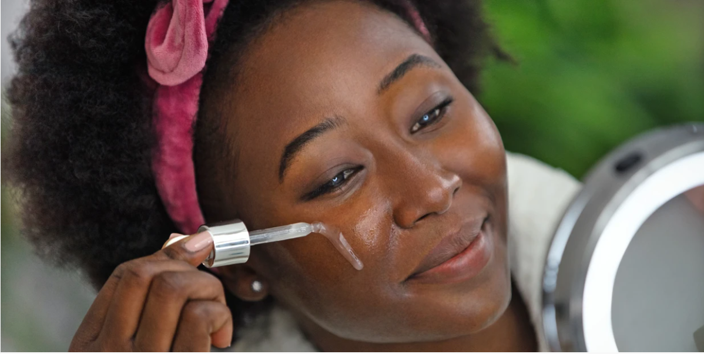

5 benefit about skincare
More Than Just Skin Dee
The largest barrier between the outside world and the body, skin has an important job. Not only does skin protect the body from the elements, but the state of a person’s skin also projects what is going on internally. A good skin care routine is simple, and the benefits may end up being surprising. Read on for 5 benefits about skin care that may not be known. what is the skin’s job? The largest organ in the human body, skin is a person’s greatest barrier against environmental forces and harmful bacteria. Skin regulates body temperature and synthesizes vitamin D. The sense of touch is directly controlled by the skin, and melanin provides protection from harmful sun rays.
skin reflects health
Skin can reflect the health of an individual. Take the liver for instance. The liver works to eliminate toxins from the body. When unable to do so, the liver will seek another way to get rid of toxins. Here is where the skin enters the picture. If liver function is impaired, the liver will push the toxins through the skin. This can be reflected in the skin as dermatitis, eczema, liver spots, rashes, and even premature wrinkles. Jaundice, the yellowing of the skin, is another sign the liver is not functioning properly. Patches of dark skin, known as hyperpigmentation, are a potential sign of diabetes. Round lesions are often the beginning of the autoimmune disorder lupus. Hives are the signal that an allergen is affecting or has entered the body. Skin not only protects the body from the outside but also alerts doctors to what is occurring on the inside.
3 layers of skin
Because skin is the strongest and largest barrier against infection, proper skin care is essential. Proper skin care will keep the outermost layer intact, maintaining enough hydration in the inner layers. Skin has 3 layers:Epidermis: the outmost layer creates skin tone and provides a waterproof barrier. Dermis: the middle layer contains sweat glands, connective tissue, hair follicles, blood vessels, and nerves. Hypodermis: the innermost and thickest layer is made mostly of fat.
Benefits of good skin care
A good skin care routine helps a person’s skin to look more hydrated. Taking care of skin can also prevent wrinkles. Here are a few more benefits of a good skin care routine: A good skin care routine will reduce visible pores, wrinkles, and under eye circles. Protection from harmful sun rays will prevent sun damage, blemishes, and hyper-pigmentation. As the individual ages, the skin loses hydration, brightness, and collagen. A good skin care routine can leave skin looking healthier and younger. Over time, the skin naturally loses elasticity and can appear saggy and crepe-like. Proper skin care can restore firmness and even texture to the skin. A good skin care routine will protect from harmful bacteria and allergens, leaving the individual feeling and looking healthier.
tips and tools
People who have not established a skin care routine may not know where to start. Consulting a dermatologist will bring the most skin improvements.
However, people can start creating a skin care routine at home with a few general tips. Some of these include:
Face wash: A good face wash can ensure all makeup, dirt, and allergens are removed from the skin. Use a face wash in the morning, after exercise, and before bed.
Sunscreen: At least 30 SPF is needed to protect against harmful sun rays.
Moisturize: All skin types can benefit from a good moisturizer. Even oily skin can profit from a lightweight and oil-free moisturizer.Don’t wear makeup to bed:
Going to sleep without removing makeup is a guaranteed way to wake up with blocked pores.Eat well and sleep: Eating smart and getting enough sleep will make skin look young and refreshed.
More than just skin deep
Surprising benefits of good skin care include restored firmness and even texture. Even protection from sun damage is a hidden benefit of good skin care.
skin care is linked to better overall health, both physical and mental. People who need help establishing a good skin care routine can consult with a dermatologist.